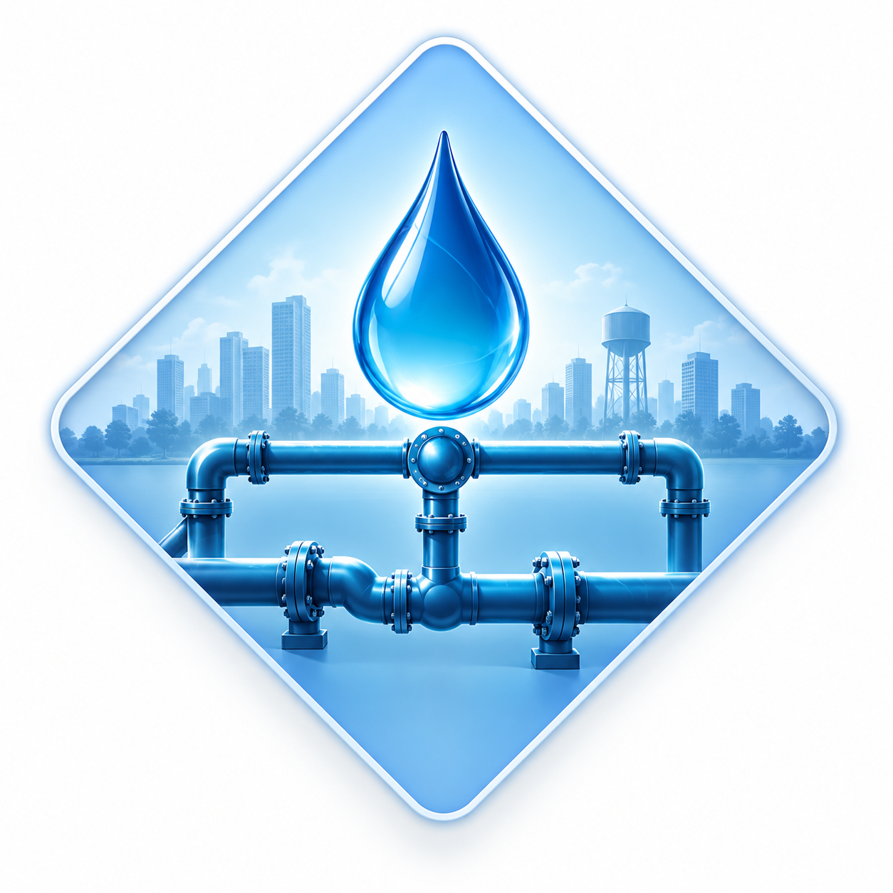
Risk-Informed Asset Management
Developing risk-informed frameworks for rehabilitation planning and life cycle cost optimization of aging water distribution systems.

Developing risk-informed frameworks for rehabilitation planning and life cycle cost optimization of aging water distribution systems.
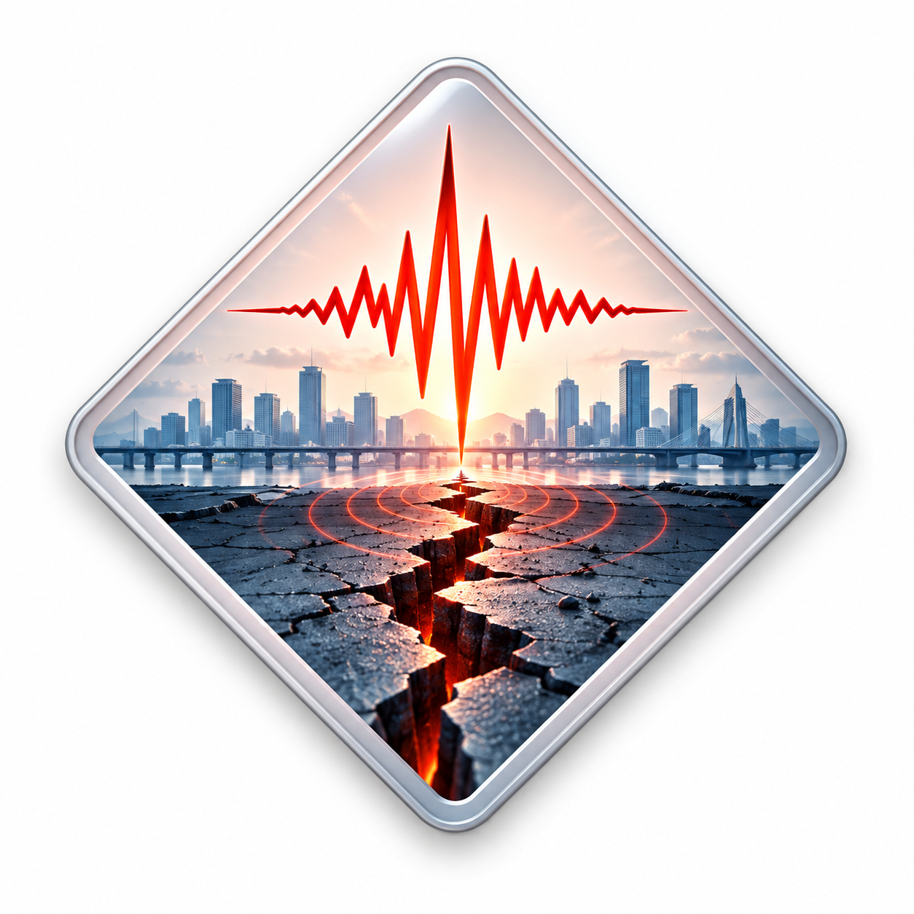
Evaluating infrastructure vulnerability under seismic, flood, and multi-hazard scenarios using probabilistic and GIS-based approaches.
Applying Markov chain deterioration models and cost-benefit analysis for data-driven rehabilitation scheduling of water pipelines.
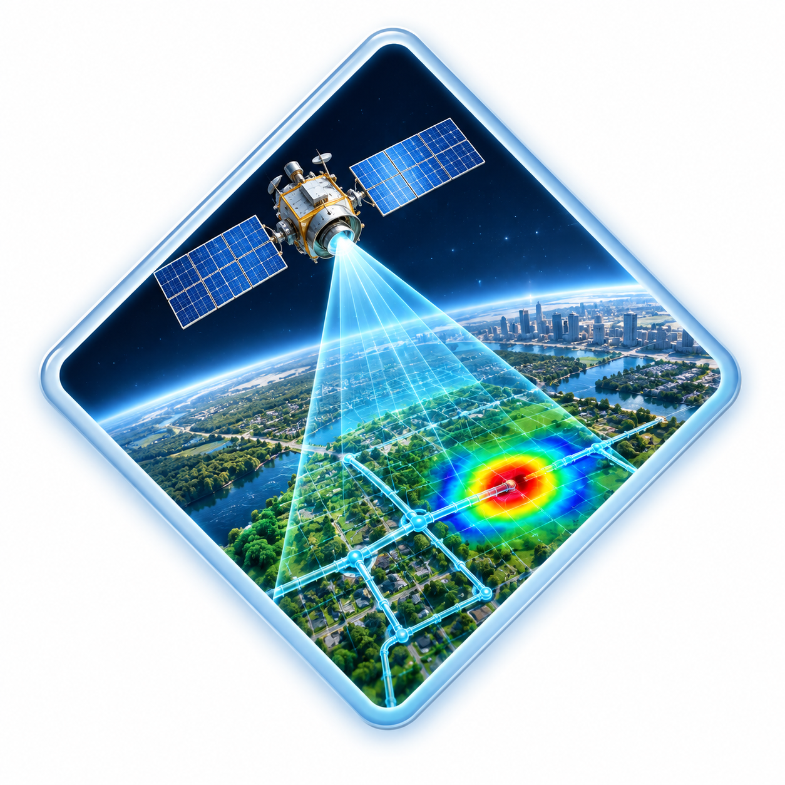
Developing computer vision models leveraging satellite imagery for automated leak detection in water distribution networks.
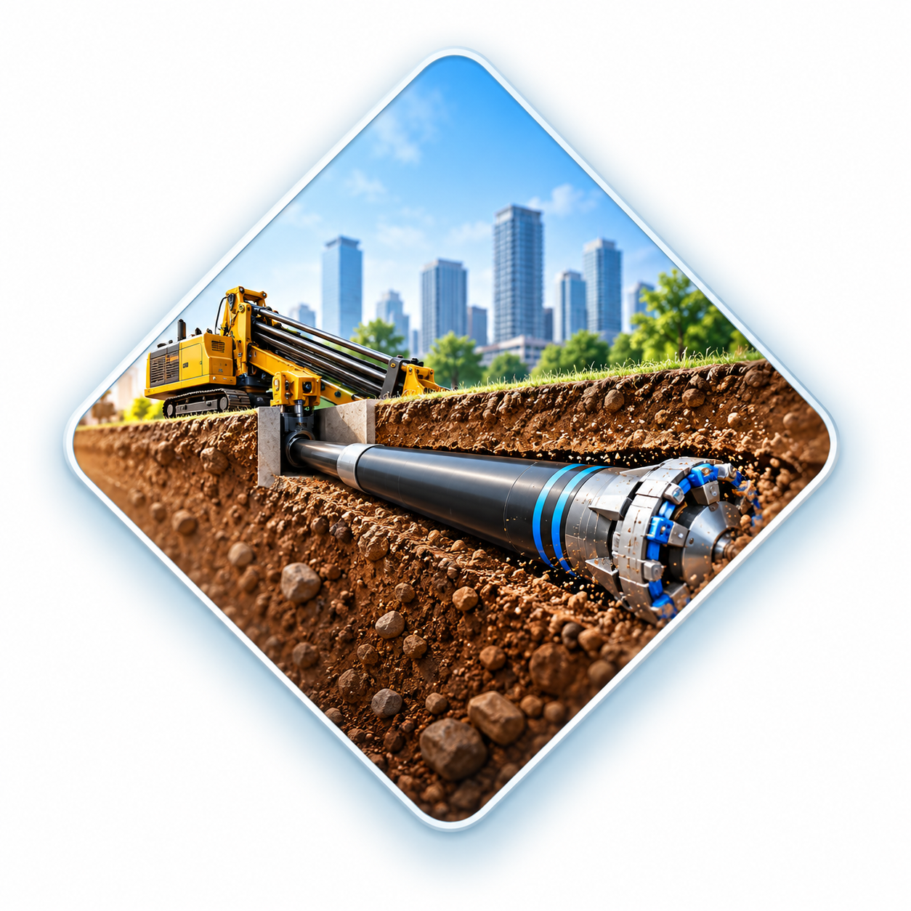
Investigating trenchless rehabilitation methods for sustainable and cost-effective pipeline renewal strategies.
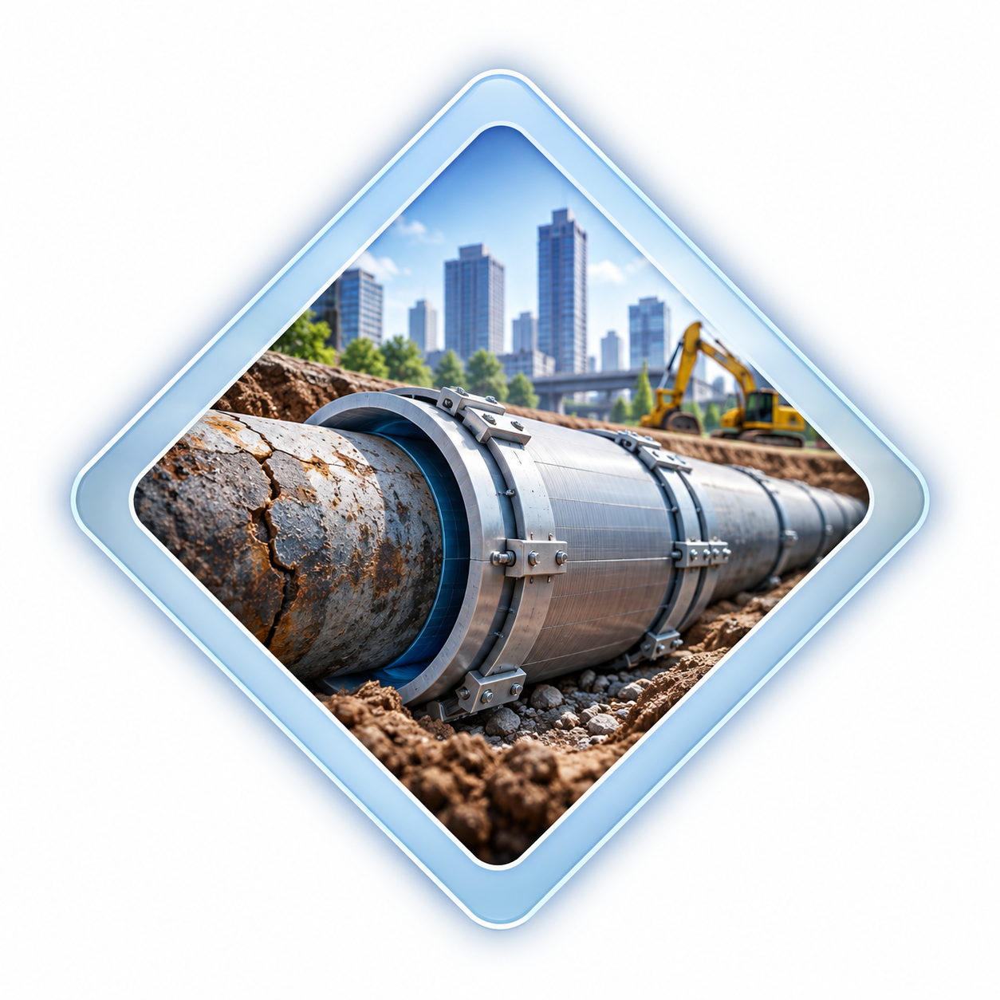
Assessing structural safety and designing rehabilitation plans for aging infrastructure, drawing on 4.5 years of professional structural engineering experience.
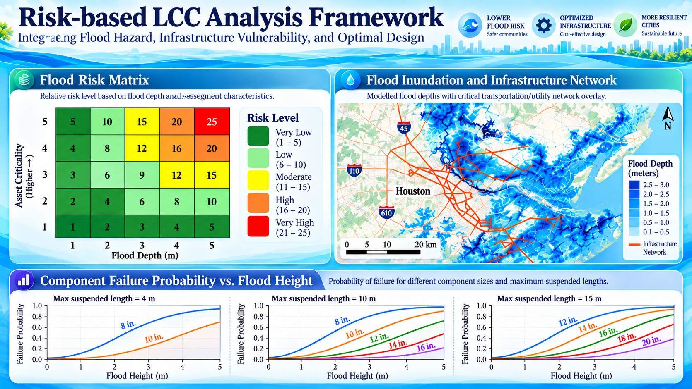
Rafi, J. N. and Mazumder, R. K. (2026). ASCE UESI Pipelines 2026. Published. Paper ID: 264.
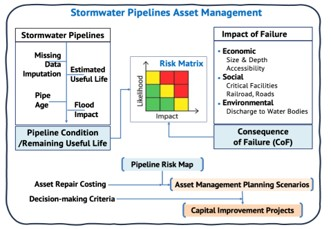
Alam, S., Rafi, J. N., Mazumder, R. K., and Mahmoud, A. B. (2026). ASCE AEI-IRD 2026. Accepted. Paper ID: 108.
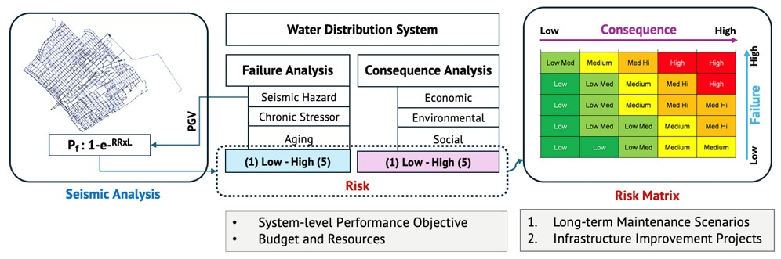
Rafi, J. N. and Mazumder, R. K. (2026). EERI 13NCEE 2026. Accepted. Paper ID: 5011.
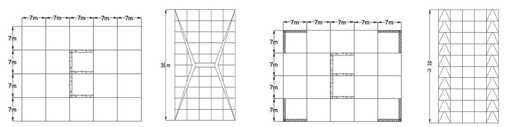
Ahmed, M., Rafi, J. N., and Hossain, M. D. (2021). ICERIE 2021. Published.
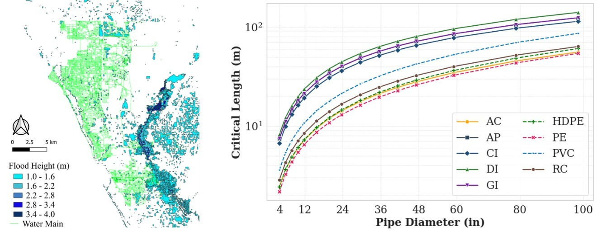
Rafi, J. N. and Mazumder, R. K. Manuscript in preparation.
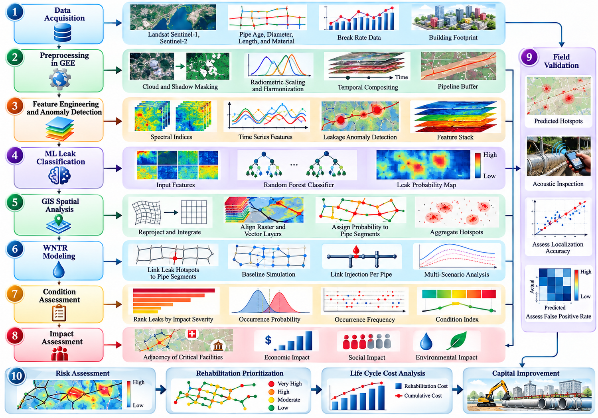
Rafi, J. N. and Mazumder, R. K. Manuscript in preparation.
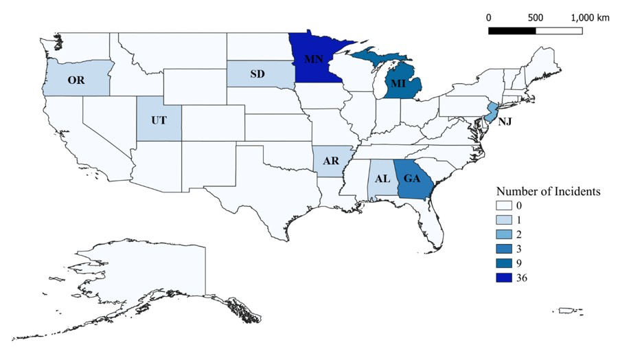
Rafi, J. N. and Mazumder, R. K. Manuscript in preparation.
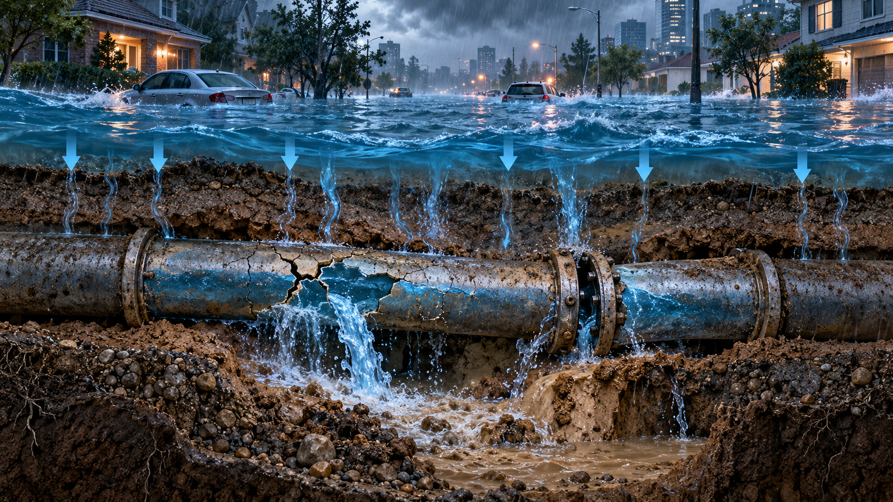
Rafi, J. N. and Mazumder, R. K. Manuscript in preparation.
| Event | Location | Type |
|---|---|---|
| ASCE UESI Pipelines Conference 2026 | Detroit, Michigan | Paper Presentation |
| EERI 13NCEE Conference 2026 | Portland, Oregon | Paper Presentation |
| Georgia Southern Student Scholars Symposium 2026 | Statesboro, Georgia | Poster Presentation |
| AEP-CEC Student Research Symposium 2026 | Statesboro, Georgia | Poster Presentation |
| NASTT 2026 No-Dig Show | Palm Springs, California | Attendance |
| NASTT 2025 Southeast Trenchless Conference | Jacksonville, Florida | Attendance |
| NHERI 2026 Mini Conference | Online | Attendance |
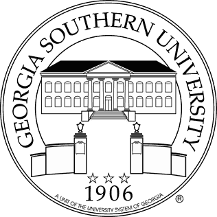
Georgia Southern University, Statesboro, Georgia, USA
Expected May 2027 | GPA: 4.00/4.00 (18 credits completed)
Supervisor: Dr. Ram Krishna Mazumder
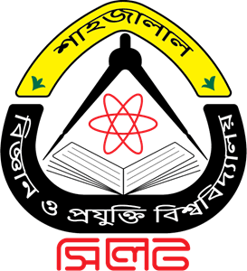
Shahjalal University of Science and Technology, Sylhet, Bangladesh
February 2021 | CGPA: 3.61/4.00 (Grade A–)
Last two-year GPA: 3.76/4.00 (Grade A)
Supervisor: Dr. Mushtaq Ahmed
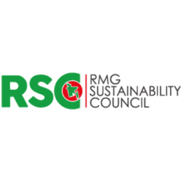
RMG Sustainability Council (RSC), Bangladesh
October 2023 – July 2025
Design Solution Center (DSC), Bangladesh
January 2023 – September 2023
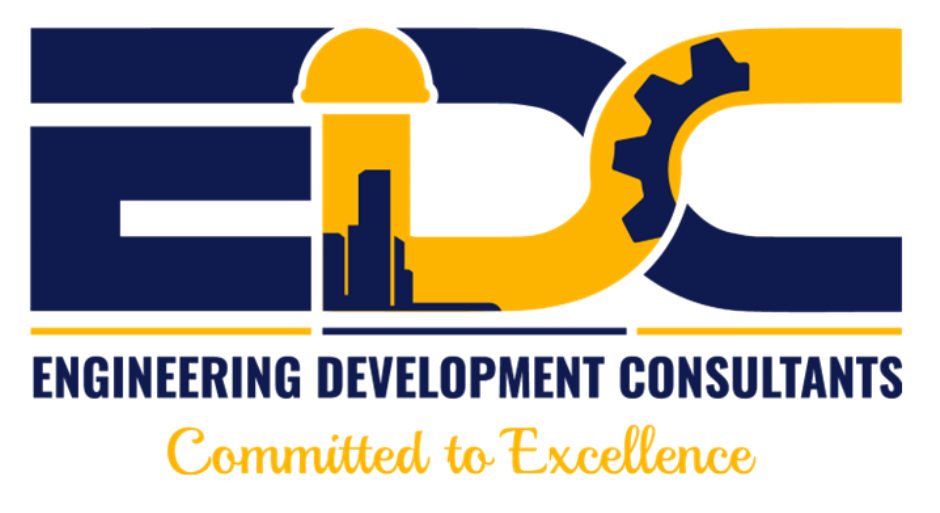
Engineering Development Consultants (EDC), Bangladesh
January 2021 – December 2022
| Category | Tools & Technologies |
|---|---|
| Programming | Python, R, Microsoft SQL Server Management Studio |
| Water Modeling | EPANET 2.2, EPANET-JS, SWMM |
| Structural Analysis | ETABS, STAAD.Pro, SAP2000, CSI SAFE, ASDIP Foundation, ASDIP Steel, RAM Connection, IDEA StatiCa |
| GIS & Remote Sensing | QGIS, Google Earth Engine (GEE) |
| Others | Microsoft Office, Autodesk AutoCAD, Bluebeam Revu, Overleaf |